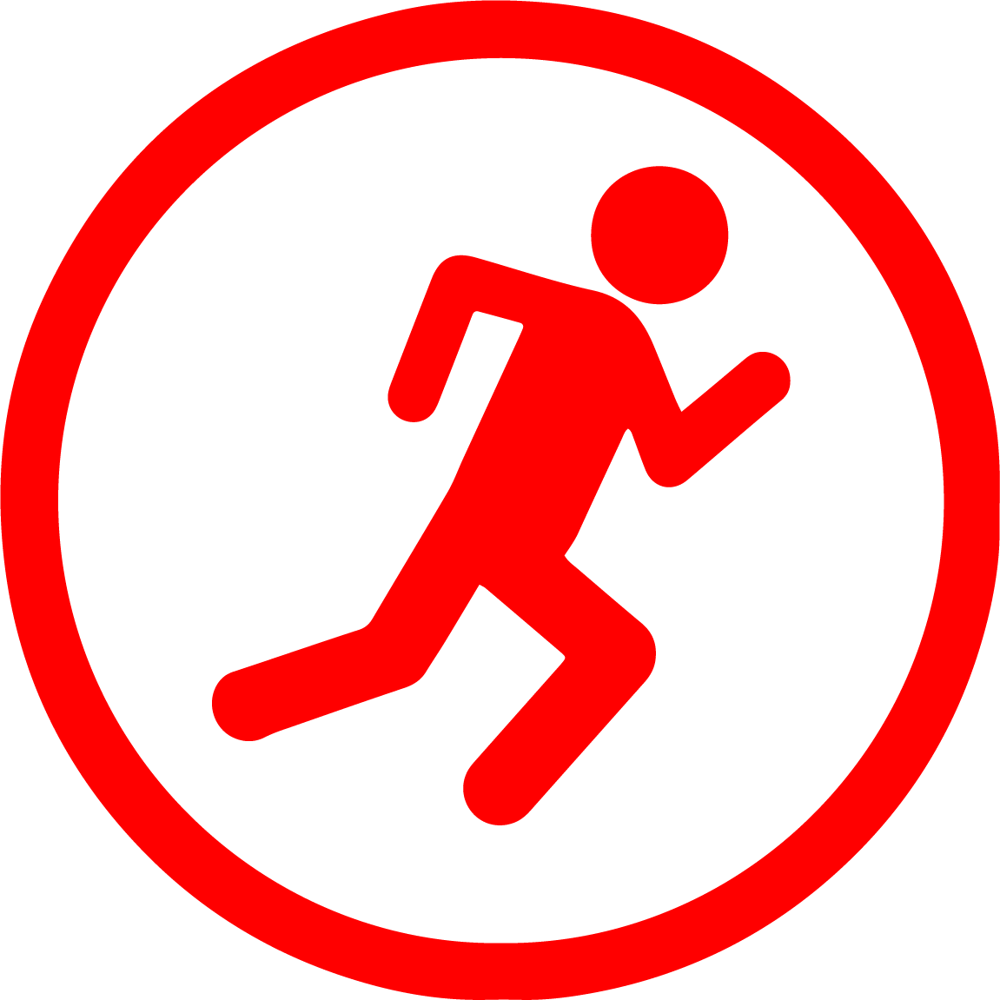

ACTION STEPS (Teacher/Staff)
- Blow three loud and sharp whistle blasts to get students attention (Stop, Look, and Listen).
- Utilize hand signals for direction, urgency, and safety commands.
- Ensure care for those students with special needs.
- Initiate Soft Lockdown or Shelter-in-Place procedures as directed, once in the building.